🧪 Расходник
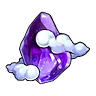
Грозовое облако возвращения⚖️ 1
Грозовое облако возвращения
НеобычныйПозволяет переместиться к ближайшей базе. Не работает в подземельях и некоторых других зонах.
🔨 Крафт
Где сделать
📍 Где взять
🧪Маленький персик дружбы⚖️ 1
Маленький персик дружбы
НеобычныйНебольшой плод, наполненный добротой. Бытует поверье, что съевший такой плод Пал откроет сердце человеку.
📍 Где взять
Из игры
Небольшой плод, наполненный добротой. Бытует поверье, что съевший такой плод Пал откроет сердце человеку. Выбирайте с умом, какого Пала им угостить.
🧪Драгоценный персик дружбы⚖️ 1
Драгоценный персик дружбы
ЭпическийРедкий волшебный плод. Бытует поверье, что съевший такой плод Пал откроет сердце человеку.
📍 Где взять
Из игры
Редкий волшебный плод. Бытует поверье, что съевший такой плод Пал откроет сердце человеку. Выбирайте с умом, какого Пала им угостить.
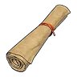
Карта сокровищКарты сокровищ
Карта сокровищ
ОбычныйСтаринная карта с отмеченным местом сокровища. При использовании добавляет метку на карте.
📍 Где взять
 Книга высоких технологийКниги технологий
Книга высоких технологийКниги технологий
Книга высоких технологий
НеобычныйКнига, в которой описаны поразительные технологии. При использовании даёт небольшое количество очков технологий.
📍 Где взять
 Книга революционных технологийКниги технологий
Книга революционных технологийКниги технологий
Книга революционных технологий
РедкийКнига, в которой описаны передовые технологии. При использовании дает очки технологий.
📍 Где взять
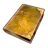
Книга технологий будущегоКниги технологий
Книга технологий будущего
ЭпическийКнига, в которой описаны опережающие время технологии. При использовании дает много очков технологий.
📍 Где взять
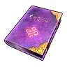
Книга технологий древностиКниги технологий
Книга технологий древности
ЛегендарныйКнига, в которой описаны утраченные древние технологии. При использовании даёт очки древних технологий.
📍 Где взять
🧪Практическая добыча руды I⚖️ 1
Практическая добыча руды I
ЛегендарныйЦенный том, раскрывающий секреты мастерства Добыча. После прочтения Пал получает постоянный бонус +1 к умению Добыча.
📍 Где взять
🧪Практическая лесозаготовка I⚖️ 1
Практическая лесозаготовка I
ЛегендарныйЦенный том, раскрывающий секреты работы Рубка деревьев. При прочтении Пал получает постоянный бонус +1 к умению Рубка деревьев.
📍 Где взять
🧪Практическая транспортировка I⚖️ 1
Практическая транспортировка I
ЛегендарныйЦенный том, раскрывающий секреты мастерства Транспортировка. После прочтения Пал получает постоянный бонус +1 к умению Транспортировка.
📍 Где взять
🧪Практическая фармацевтика I⚖️ 1
Практическая фармацевтика I
ЛегендарныйЦенный том, раскрывающий секреты мастерства Фармацевтика. После прочтения Пал получает постоянный бонус +1 к умению Фармацевтика.
📍 Где взять
🧪Практическая энергетика I⚖️ 1
Практическая энергетика I
ЛегендарныйЦенный том, раскрывающий секреты работы Генерация энергии. При прочтении Пал получает постоянный бонус +1 к умению Генерация энергии.
📍 Где взять
🧪Практический полив I⚖️ 1
Практический полив I
ЛегендарныйЦенный том, раскрывающий секреты работы Полив. При прочтении Пал получает постоянный бонус +1 к умению Полив.
📍 Где взять
🧪Практический посев семян I⚖️ 1
Практический посев семян I
ЛегендарныйЦенный том, раскрывающий секреты работы Посев семян. При прочтении Пал получает постоянный бонус +1 к умению Посев семян.
📍 Где взять
🧪Практический сбор I⚖️ 1
Практический сбор I
ЛегендарныйЦенный том, раскрывающий секреты работы Сбор. При прочтении Пал получает постоянный бонус +1 к умению Сбор.
📍 Где взять
🧪Практическое охлаждение I⚖️ 1
Практическое охлаждение I
ЛегендарныйЦенный том, раскрывающий секреты мастерства Охлаждение. После прочтения Пал получает постоянный бонус +1 к умению Охлаждение.
📍 Где взять
🧪Практическое разжигание огня I⚖️ 1
Практическое разжигание огня I
ЛегендарныйЦенный том, раскрывающий секреты работы Разжигание огня. При прочтении Пал получает постоянный бонус +1 к умению Разжигание огня.
📍 Где взять
🧪Практическое ремесло I⚖️ 1
Практическое ремесло I
ЛегендарныйЦенный том, раскрывающий секреты работы Ручная работа. При прочтении Пал получает постоянный бонус +1 к умению Ручная работа.
📍 Где взять
🧪Практическое фермерство I⚖️ 1
Практическое фермерство I
ЛегендарныйЦенный том, раскрывающий секреты мастерства Фермерство. После прочтения Пал получает постоянный бонус +1 к умению Фермерство.
📍 Где взять
Медикаменты низкого качества⚖️ 0,2
Медикаменты низкого качества
ОбычныйМедикаменты низкого качества — средство от Простуда, Растяжение и Обжора. При употреблении не восстанавливает здоровье.
🔨 Крафт
Где сделать
📍 Где взять
Подозрительный сок⚖️ 0,2
Подозрительный сок
ОбычныйСок, улучшающий настроение. После употребления немного повышает скорость работы на короткое время, но слегка снижает уровень рассудка.
🔨 Крафт
Где сделать
📍 Где взять
Препарат для промывания мозгов⚖️ 0,2
Препарат для промывания мозгов
ОбычныйПрепарат для промывания мозгов — высокоэффективное средство против нестабильных элементов. Не восстанавливает здоровье.
 Простое снадобье восстановления⚖️ 0,2
Простое снадобье восстановления⚖️ 0,2
Простое снадобье восстановления
ОбычныйСнадобье, которое со временем залечивает раны. Несмотря на низкое качество, всё же понемногу восстанавливает здоровье.
🔨 Крафт
Где сделать
📍 Где взять
 Сок загадочного гриба⚖️ 0,2
Сок загадочного гриба⚖️ 0,2
Сок загадочного гриба
ОбычныйГрибной сок, резко поднимающий настроение. На время значительно ускоряет работу, но заметно снижает уровень рассудка.
 Странный сок⚖️ 0,2
Странный сок⚖️ 0,2
Странный сок
ОбычныйСок, заметно поднимающий настроение. На некоторое время увеличивает скорость работы, но снижает уровень рассудка.
🔨 Крафт
Где сделать
📍 Где взять
 Медикаменты⚖️ 0,2
Медикаменты⚖️ 0,2
Медикаменты
НеобычныйНеобычное Медикаменты — помогает при Язва желудка и Перелом. Не восстанавливает здоровье.
🔨 Крафт
Где сделать
📍 Где взять
Питательный препарат⚖️ 1
Питательный препарат
НеобычныйПитательный препарат, на некоторое время дающий сытость. Насыщенный напиток, содержащий концентрат из различных нутриентов.
🔨 Крафт
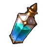
Святая вода Мирового Древа×25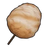
Карамельная сахарная вата×18Где сделать
📍 Где взять
Из игры
Питательный препарат, на некоторое время дающий сытость. Насыщенный напиток, содержащий концентрат из различных нутриентов. Уберегает от голода во время экспедиций.
Снадобье восстановления⚖️ 0,2
Снадобье восстановления
НеобычныйСнадобье, постепенно исцеляющее раны. Восстанавливает здоровье в умеренном объёме.
🔨 Крафт
Где сделать
📍 Где взять
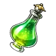
Качественное снадобье восстановления⚖️ 0,2
Качественное снадобье восстановления
РедкийСнадобье, постепенно исцеляющее раны. Высококачественное средство, хорошо восстанавливающее здоровье.
🔨 Крафт
Где сделать
📍 Где взять
Где используется
 Качественные медикаменты⚖️ 0,2
Качественные медикаменты⚖️ 0,2
Качественные медикаменты
РедкийКачественные медикаменты — средство от Слабость и Депрессия. Не восстанавливает здоровье.
🔨 Крафт
Где сделать
📍 Где взять
 Снадобье очистки памяти⚖️ 0,2
Снадобье очистки памяти⚖️ 0,2
Снадобье очистки памяти
РедкийВыпив это снадобье, игрок может сбросить очки характеристик. Не действует на Палов.
🔨 Крафт
Где сделать
📍 Где взять
 Превосходное снадобье восстановления⚖️ 0,2
Превосходное снадобье восстановления⚖️ 0,2
Превосходное снадобье восстановления
ЭпическийСнадобье, постепенно исцеляющее раны. Невероятно качественное средство, восстанавливающее здоровье прямо на глазах.
🔨 Крафт
Где сделать
📍 Где взять
Снадобье возрождения⚖️ 1
Снадобье возрождения
ЭпическийСнадобье, возвращающее к жизни раненых Палов, потерявших способность двигаться.
🔨 Крафт
Где сделать
📍 Где взять
 Простая приманка⚖️ 0,025
Простая приманка⚖️ 0,025
Простая приманка
ОбычныйПростая рыболовная приманка для привлечения Палов. Требуется для рыбалки.
🔨 Крафт ×10 за раз
Где сделать
📍 Где взять
 Качественная приманка⚖️ 0,025
Качественная приманка⚖️ 0,025
Качественная приманка
НеобычныйРыболовная приманка для привлечения Палов. Улучшена, благодаря чему Палы легче клюют на приманку, а количество предметов, получаемых при рыбалке, совсем немного увеличивается.
🔨 Крафт ×10 за раз
Где сделать
📍 Где взять
 Роскошная приманка⚖️ 0,025
Роскошная приманка⚖️ 0,025
Роскошная приманка
РедкийРыболовная приманка для привлечения Палов. Улучшена, благодаря чему шкала в мини-игре становится немного больше, а количество предметов, получаемых при рыбалке, немного увеличивается.
🔨 Крафт ×10 за раз
Где сделать
📍 Где взять
 Заманчивая приманка⚖️ 0,025
Заманчивая приманка⚖️ 0,025
Заманчивая приманка
ЭпическийПриманка для привлечения Палов. С этой улучшенной приманкой в мини-игре индикатор становится больше, а количество получаемых трофеев увеличивается.
🔨 Крафт ×3 за раз
Где сделать
📍 Где взять
 Том обучения (малый)⚖️ 0,1
Том обучения (малый)⚖️ 0,1
Том обучения (малый)
ОбычныйПрочитав эту книгу, Пал получит небольшое кол-во опыта.
📍 Где взять
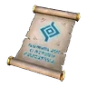
Том обучения (средний)⚖️ 0,1
Том обучения (средний)
НеобычныйПрочитав эту книгу, Пал получит умеренное кол-во опыта.
📍 Где взять
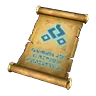
Том обучения (большой)⚖️ 0,1
Том обучения (большой)
РедкийПрочитав эту книгу, Пал получит большое кол-во опыта.
📍 Где взять
 Том обучения (огромный)⚖️ 0,1
Том обучения (огромный)⚖️ 0,1
Том обучения (огромный)
ЭпическийПрочитав эту книгу, Пал получит значительное кол-во опыта.
📍 Где взять
 Кристалл обучения⚖️ 0,1
Кристалл обучения⚖️ 0,1
Кристалл обучения
ЛегендарныйТаинственный кристалл. Повышает уровень Пала на 1 при использовании.
📍 Где взять
Святая вода Мирового Древа⚖️ 0,1
Святая вода Мирового Древа
РедкийСвятая вода, наполненная энергией Мирового Древа. Очищает всё и пробуждает скрытую силу.
📍 Где взять
Где используется
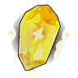
Молниеносный кристалл пробуждения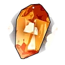
Земной кристалл пробуждения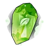
Травяной кристалл пробуждения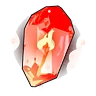
Огненный кристалл пробуждения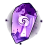
Тёмный кристалл пробужденияИз игры
Святая вода, наполненная энергией Мирового Древа. Очищает всё и пробуждает скрытую силу. При употреблении на некоторое время предотвращает исчезновение при контакте с деревьями и камнями Мирового Древа.
🧪Расходуемый имплант: Алмазное телоПассивки
Расходуемый имплант: Алмазное тело
ЛегендарныйИмплант для изменения пассивных навыков Пала. При наличии в инвентаре на Операционный стол для Палов становится доступен выбор соответствующего пассивного навыка.
📍 Где взять
🧪Расходуемый имплант: АскетПассивки
Расходуемый имплант: Аскет
ЛегендарныйИмплант для изменения пассивных навыков Пала. При наличии в инвентаре на Операционный стол для Палов становится доступен выбор соответствующего пассивного навыка.
📍 Где взять
🧪Расходуемый имплант: БессмертиеПассивки
Расходуемый имплант: Бессмертие
ЛегендарныйИмплант для изменения пассивных навыков Пала. При наличии в инвентаре на Операционный стол для Палов становится доступен выбор соответствующего пассивного навыка.
📍 Где взять
🧪Расходуемый имплант: Бог разрушенияПассивки
Расходуемый имплант: Бог разрушения
ЛегендарныйИмплант для изменения пассивных навыков Пала. При наличии в инвентаре на Операционный стол для Палов становится доступен выбор соответствующего пассивного навыка.
📍 Где взять
🧪Расходуемый имплант: Божественная скоростьПассивки
Расходуемый имплант: Божественная скорость
ЛегендарныйИмплант для изменения пассивных навыков Пала. При наличии в инвентаре на Операционный стол для Палов становится доступен выбор соответствующего пассивного навыка.
📍 Где взять
🧪Расходуемый имплант: ВампирПассивки
Расходуемый имплант: Вампир
ЛегендарныйИмплант для изменения пассивных навыков Пала. При наличии в инвентаре на Операционный стол для Палов становится доступен выбор соответствующего пассивного навыка.
📍 Где взять
🧪Расходуемый имплант: Вечный двигательПассивки
Расходуемый имплант: Вечный двигатель
ЛегендарныйИмплант для изменения пассивных навыков Пала. При наличии в инвентаре на Операционный стол для Палов становится доступен выбор соответствующего пассивного навыка.
📍 Где взять
🧪Расходуемый имплант: ВиртуозПассивки
Расходуемый имплант: Виртуоз
ЛегендарныйИмплант для изменения пассивных навыков Пала. При наличии в инвентаре на Операционный стол для Палов становится доступен выбор соответствующего пассивного навыка.
📍 Где взять
🧪Расходуемый имплант: Демон-богПассивки
Расходуемый имплант: Демон-бог
ЛегендарныйИмплант для изменения пассивных навыков Пала. При наличии в инвентаре на Операционный стол для Палов становится доступен выбор соответствующего пассивного навыка.
📍 Где взять
🧪Расходуемый имплант: Дьявольские рукиПассивки
Расходуемый имплант: Дьявольские руки
ЛегендарныйИмплант для изменения пассивных навыков Пала. При наличии в инвентаре на Операционный стол для Палов становится доступен выбор соответствующего пассивного навыка.
📍 Где взять
🧪Расходуемый имплант: Живая стена святилищаПассивки
Расходуемый имплант: Живая стена святилища
ЛегендарныйИмплант для изменения пассивных навыков Пала. При наличии в инвентаре на Операционный стол для Палов становится доступен выбор соответствующего пассивного навыка.
📍 Где взять
🧪Расходуемый имплант: Небесное скольжениеПассивки
Расходуемый имплант: Небесное скольжение
ЛегендарныйИмплант для изменения пассивных навыков Пала. При наличии в инвентаре на Операционный стол для Палов становится доступен выбор соответствующего пассивного навыка.
📍 Где взять
🧪Расходуемый имплант: НебожительПассивки
Расходуемый имплант: Небожитель
ЛегендарныйИмплант для изменения пассивных навыков Пала. При наличии в инвентаре на Операционный стол для Палов становится доступен выбор соответствующего пассивного навыка.
📍 Где взять
🧪Расходуемый имплант: Непреклонный духПассивки
Расходуемый имплант: Непреклонный дух
ЛегендарныйИмплант для изменения пассивных навыков Пала. При наличии в инвентаре на Операционный стол для Палов становится доступен выбор соответствующего пассивного навыка.
📍 Где взять
🧪Расходуемый имплант: НянькаПассивки
Расходуемый имплант: Нянька
ЛегендарныйИмплант для изменения пассивных навыков Пала. При наличии в инвентаре на Операционный стол для Палов становится доступен выбор соответствующего пассивного навыка.
📍 Где взять
🧪Расходуемый имплант: Обоюдоострый святой мечПассивки
Расходуемый имплант: Обоюдоострый святой меч
ЛегендарныйИмплант для изменения пассивных навыков Пала. При наличии в инвентаре на Операционный стол для Палов становится доступен выбор соответствующего пассивного навыка.
📍 Где взять
🧪Расходуемый имплант: Особая конституцияПассивки
Расходуемый имплант: Особая конституция
ЛегендарныйИмплант для изменения пассивных навыков Пала. При наличии в инвентаре на Операционный стол для Палов становится доступен выбор соответствующего пассивного навыка.
📍 Где взять
🧪Расходуемый имплант: Повелитель волнПассивки
Расходуемый имплант: Повелитель волн
ЛегендарныйИмплант для изменения пассивных навыков Пала. При наличии в инвентаре на Операционный стол для Палов становится доступен выбор соответствующего пассивного навыка.
📍 Где взять
🧪Расходуемый имплант: Прыжок между измерениямиПассивки
Расходуемый имплант: Прыжок между измерениями
ЛегендарныйИмплант для изменения пассивных навыков Пала. При наличии в инвентаре на Операционный стол для Палов становится доступен выбор соответствующего пассивного навыка.
📍 Где взять
🧪Расходуемый имплант: Рассада божественного древаПассивки
Расходуемый имплант: Рассада божественного древа
ЛегендарныйИмплант для изменения пассивных навыков Пала. При наличии в инвентаре на Операционный стол для Палов становится доступен выбор соответствующего пассивного навыка.
📍 Где взять
🧪Расходуемый имплант: Тяжёлая броняПассивки
Расходуемый имплант: Тяжёлая броня
ЛегендарныйИмплант для изменения пассивных навыков Пала. При наличии в инвентаре на Операционный стол для Палов становится доступен выбор соответствующего пассивного навыка.
📍 Где взять
 Плод мастерства воды: АкваджетПлоды навыков
Плод мастерства воды: АкваджетПлоды навыков
Плод мастерства воды: Акваджет
НеобычныйДай этот плод палу, чтобы он изучил навык Акваджет.
📍 Где взять
Из игры
Используйте на Пале, чтобы он изучил навык Акваджет.
 Плод мастерства воды: Водяной выстрелПлоды навыков
Плод мастерства воды: Водяной выстрелПлоды навыков
Плод мастерства воды: Водяной выстрел
НеобычныйДай этот плод палу, чтобы он изучил навык Водяной выстрел.
📍 Где взять
Из игры
Используйте на Пале, чтобы он изучил навык Водяной выстрел.
 Плод мастерства дракона: Драконий взрывПлоды навыков
Плод мастерства дракона: Драконий взрывПлоды навыков
Плод мастерства дракона: Драконий взрыв
НеобычныйДай этот плод палу, чтобы он изучил навык Драконий взрыв.
📍 Где взять
Из игры
Используйте на Пале, чтобы он изучил навык Драконий взрыв.
 Плод мастерства дракона: Драконья пушкаПлоды навыков
Плод мастерства дракона: Драконья пушкаПлоды навыков
Плод мастерства дракона: Драконья пушка
НеобычныйДай этот плод палу, чтобы он изучил навык Драконья пушка.
📍 Где взять
Из игры
Используйте на Пале, чтобы он изучил навык Драконья пушка.
 Плод мастерства земли: Грязевой выстрелПлоды навыков
Плод мастерства земли: Грязевой выстрелПлоды навыков
Плод мастерства земли: Грязевой выстрел
НеобычныйДай этот плод палу, чтобы он изучил навык Грязевой выстрел.
📍 Где взять
Из игры
Используйте на Пале, чтобы он изучил навык Грязевой выстрел.
 Плод мастерства земли: Каменный залпПлоды навыков
Плод мастерства земли: Каменный залпПлоды навыков
Плод мастерства земли: Каменный залп
НеобычныйДай этот плод палу, чтобы он изучил навык Каменный залп.
📍 Где взять
Из игры
Используйте на Пале, чтобы он изучил навык Каменный залп.
 Плод мастерства земли: КамнемётПлоды навыков
Плод мастерства земли: КамнемётПлоды навыков
Плод мастерства земли: Камнемёт
НеобычныйДай этот плод палу, чтобы он изучил навык Камнемёт.
📍 Где взять
Из игры
Используйте на Пале, чтобы он изучил навык Камнемёт.
 Плод мастерства льда: Ледяная ракетаПлоды навыков
Плод мастерства льда: Ледяная ракетаПлоды навыков
Плод мастерства льда: Ледяная ракета
НеобычныйДай этот плод палу, чтобы он изучил навык Ледяная ракета.
📍 Где взять
Из игры
Используйте на Пале, чтобы он изучил навык Ледяная ракета.
 Плод мастерства льда: Ледяной резакПлоды навыков
Плод мастерства льда: Ледяной резакПлоды навыков
Плод мастерства льда: Ледяной резак
Необычныйобщая иконка из игрыДай этот плод палу, чтобы он изучил навык Ледяной резак.
📍 Где взять
Из игры
Используйте на Пале, чтобы он изучил навык Ледяной резак.
 Плод мастерства молнии: Грозовое копьёПлоды навыков
Плод мастерства молнии: Грозовое копьёПлоды навыков
Плод мастерства молнии: Грозовое копьё
НеобычныйДай этот плод палу, чтобы он изучил навык Грозовое копьё.
Из игры
Используйте на Пале, чтобы он изучил навык Грозовое копьё.
 Плод мастерства молнии: Искровой выстрелПлоды навыков
Плод мастерства молнии: Искровой выстрелПлоды навыков
Плод мастерства молнии: Искровой выстрел
НеобычныйДай этот плод палу, чтобы он изучил навык Искровой выстрел.
📍 Где взять
Из игры
Используйте на Пале, чтобы он изучил навык Искровой выстрел.
 Плод мастерства молнии: ПлазмомётПлоды навыков
Плод мастерства молнии: ПлазмомётПлоды навыков
Плод мастерства молнии: Плазмомёт
НеобычныйДай этот плод палу, чтобы он изучил навык Плазмомёт.
📍 Где взять
Из игры
Используйте на Пале, чтобы он изучил навык Плазмомёт.
 Плод мастерства молнии: Шаровая молнияПлоды навыков
Плод мастерства молнии: Шаровая молнияПлоды навыков
Плод мастерства молнии: Шаровая молния
НеобычныйДай этот плод палу, чтобы он изучил навык Шаровая молния.
📍 Где взять
Из игры
Используйте на Пале, чтобы он изучил навык Шаровая молния.
 Плод мастерства молнии: Шоковая волнаПлоды навыков
Плод мастерства молнии: Шоковая волнаПлоды навыков
Плод мастерства молнии: Шоковая волна
НеобычныйДай этот плод палу, чтобы он изучил навык Шоковая волна.
📍 Где взять
Из игры
Используйте на Пале, чтобы он изучил навык Шоковая волна.
 Плод мастерства огня: Огненная стрелаПлоды навыков
Плод мастерства огня: Огненная стрелаПлоды навыков
Плод мастерства огня: Огненная стрела
НеобычныйПлод навыка. Пал выучит новый навык.
📍 Где взять
Из игры
Используйте на Пале, чтобы он изучил навык Огненная стрела.
 Плод мастерства огня: Огненный выстрелПлоды навыков
Плод мастерства огня: Огненный выстрелПлоды навыков
Плод мастерства огня: Огненный выстрел
НеобычныйДай этот плод палу, чтобы он изучил навык Огненный выстрел.
📍 Где взять
Из игры
Используйте на Пале, чтобы он изучил навык Огненный выстрел.
 Плод мастерства огня: Расщеплённый огоньПлоды навыков
Плод мастерства огня: Расщеплённый огоньПлоды навыков
Плод мастерства огня: Расщеплённый огонь
НеобычныйДай этот плод палу, чтобы он изучил навык Расщеплённый огонь.
📍 Где взять
Из игры
Используйте на Пале, чтобы он изучил навык Расщеплённый огонь.
 Плод мастерства травы: Ветряной клинокПлоды навыков
Плод мастерства травы: Ветряной клинокПлоды навыков
Плод мастерства травы: Ветряной клинок
НеобычныйДай этот плод палу, чтобы он изучил навык Ветряной клинок.
📍 Где взять
Из игры
Используйте на Пале, чтобы он изучил навык Ветряной клинок.
 Плод мастерства травы: Семенной пулемётПлоды навыков
Плод мастерства травы: Семенной пулемётПлоды навыков
Плод мастерства травы: Семенной пулемёт
НеобычныйДай этот плод палу, чтобы он изучил навык Семенной пулемёт.
📍 Где взять
Из игры
Используйте на Пале, чтобы он изучил навык Семенной пулемёт.
 Плод мастерства тьмы: Духовное пламяПлоды навыков
Плод мастерства тьмы: Духовное пламяПлоды навыков
Плод мастерства тьмы: Духовное пламя
НеобычныйДай этот плод палу, чтобы он изучил навык Духовное пламя.
📍 Где взять
Из игры
Используйте на Пале, чтобы он изучил навык Духовное пламя.
 Плод мастерства тьмы: Распространение тьмыПлоды навыков
Плод мастерства тьмы: Распространение тьмыПлоды навыков
Плод мастерства тьмы: Распространение тьмы
НеобычныйДай этот плод палу, чтобы он изучил навык Распространение тьмы.
📍 Где взять
Из игры
Используйте на Пале, чтобы он изучил навык Распространение тьмы.
 Плод мастерства тьмы: Теневой взрывПлоды навыков
Плод мастерства тьмы: Теневой взрывПлоды навыков
Плод мастерства тьмы: Теневой взрыв
НеобычныйДай этот плод палу, чтобы он изучил навык Теневой взрыв.
📍 Где взять
Из игры
Используйте на Пале, чтобы он изучил навык Теневой взрыв.
 Плод мастерства тьмы: Тёмная пушкаПлоды навыков
Плод мастерства тьмы: Тёмная пушкаПлоды навыков
Плод мастерства тьмы: Тёмная пушка
НеобычныйДай этот плод палу, чтобы он изучил навык Тёмная пушка.
📍 Где взять
Из игры
Используйте на Пале, чтобы он изучил навык Тёмная пушка.
 Плод мастерства тьмы: Тёмный выстрелПлоды навыков
Плод мастерства тьмы: Тёмный выстрелПлоды навыков
Плод мастерства тьмы: Тёмный выстрел
НеобычныйДай этот плод палу, чтобы он изучил навык Тёмный выстрел.
Из игры
Используйте на Пале, чтобы он изучил навык Тёмный выстрел.
 Плод мастерства тьмы: Ядовитый выстрелПлоды навыков
Плод мастерства тьмы: Ядовитый выстрелПлоды навыков
Плод мастерства тьмы: Ядовитый выстрел
НеобычныйДай этот плод палу, чтобы он изучил навык Ядовитый выстрел.
📍 Где взять
Из игры
Используйте на Пале, чтобы он изучил навык Ядовитый выстрел.
 Плод мастерства: Воздушная пушкаПлоды навыков
Плод мастерства: Воздушная пушкаПлоды навыков
Плод мастерства: Воздушная пушка
НеобычныйДай этот плод палу, чтобы он изучил навык Воздушная пушка.
📍 Где взять
Из игры
Используйте на Пале, чтобы он изучил навык Воздушная пушка.
 Плод мастерства: Силовой выстрелПлоды навыков
Плод мастерства: Силовой выстрелПлоды навыков
Плод мастерства: Силовой выстрел
НеобычныйДай этот плод палу, чтобы он изучил навык Силовой выстрел.
📍 Где взять
Из игры
Используйте на Пале, чтобы он изучил навык Силовой выстрел.
 Плод мастерства воды: Водяная бомбаПлоды навыков
Плод мастерства воды: Водяная бомбаПлоды навыков
Плод мастерства воды: Водяная бомба
РедкийДай этот плод палу, чтобы он изучил навык Водяная бомба.
📍 Где взять
Из игры
Используйте на Пале, чтобы он изучил навык Водяная бомба.
 Плод мастерства воды: Гидроатака под давлениемПлоды навыков
Плод мастерства воды: Гидроатака под давлениемПлоды навыков
Плод мастерства воды: Гидроатака под давлением
Редкийобщая иконка из игрыДай этот плод палу, чтобы он изучил навык Гидроатака под давлением.
📍 Где взять
Из игры
Используйте на Пале, чтобы он изучил навык Гидроатака под давлением.
 Плод мастерства воды: Кислотный дождьПлоды навыков
Плод мастерства воды: Кислотный дождьПлоды навыков
Плод мастерства воды: Кислотный дождь
РедкийДай этот плод палу, чтобы он изучил навык Кислотный дождь.
📍 Где взять
Из игры
Используйте на Пале, чтобы он изучил навык Кислотный дождь.
 Плод мастерства воды: Полоса брызгПлоды навыков
Плод мастерства воды: Полоса брызгПлоды навыков
Плод мастерства воды: Полоса брызг
РедкийДай этот плод палу, чтобы он изучил навык Полоса брызг.
📍 Где взять
Из игры
Используйте на Пале, чтобы он изучил навык Полоса брызг.
 Плод мастерства воды: Пузырьковый выстрелПлоды навыков
Плод мастерства воды: Пузырьковый выстрелПлоды навыков
Плод мастерства воды: Пузырьковый выстрел
РедкийДай этот плод палу, чтобы он изучил навык Пузырьковый выстрел.
📍 Где взять
Из игры
Используйте на Пале, чтобы он изучил навык Пузырьковый выстрел.
 Плод мастерства дракона: Взрывная пушкаПлоды навыков
Плод мастерства дракона: Взрывная пушкаПлоды навыков
Плод мастерства дракона: Взрывная пушка
РедкийДай этот плод палу, чтобы он изучил навык Взрывная пушка.
📍 Где взять
Из игры
Используйте на Пале, чтобы он изучил навык Взрывная пушка.
 Плод мастерства дракона: Дыхание драконаПлоды навыков
Плод мастерства дракона: Дыхание драконаПлоды навыков
Плод мастерства дракона: Дыхание дракона
РедкийДай этот плод палу, чтобы он изучил навык Дыхание дракона.
📍 Где взять
Из игры
Используйте на Пале, чтобы он изучил навык Дыхание дракона.
 Плод мастерства дракона: КометаПлоды навыков
Плод мастерства дракона: КометаПлоды навыков
Плод мастерства дракона: Комета
РедкийДай этот плод палу, чтобы он изучил навык Комета.
📍 Где взять
Из игры
Используйте на Пале, чтобы он изучил навык Комета.
 Плод мастерства земли: Песчаный вихрьПлоды навыков
Плод мастерства земли: Песчаный вихрьПлоды навыков
Плод мастерства земли: Песчаный вихрь
РедкийДай этот плод палу, чтобы он изучил навык Песчаный вихрь.
📍 Где взять
Из игры
Используйте на Пале, чтобы он изучил навык Песчаный вихрь.
 Плод мастерства льда: АйсбергПлоды навыков
Плод мастерства льда: АйсбергПлоды навыков
Плод мастерства льда: Айсберг
РедкийДай этот плод палу, чтобы он изучил навык Айсберг.
📍 Где взять
Из игры
Используйте на Пале, чтобы он изучил навык Айсберг.
 Плод мастерства льда: Ледяная стенаПлоды навыков
Плод мастерства льда: Ледяная стенаПлоды навыков
Плод мастерства льда: Ледяная стена
РедкийДай этот плод палу, чтобы он изучил навык Ледяная стена.
📍 Где взять
Из игры
Используйте на Пале, чтобы он изучил навык Ледяная стена.
 Плод мастерства льда: Ледяное дыханиеПлоды навыков
Плод мастерства льда: Ледяное дыханиеПлоды навыков
Плод мастерства льда: Ледяное дыхание
РедкийДай этот плод палу, чтобы он изучил навык Ледяное дыхание.
📍 Где взять
Из игры
Используйте на Пале, чтобы он изучил навык Ледяное дыхание.
 Плод мастерства льда: Ледяные пулиПлоды навыков
Плод мастерства льда: Ледяные пулиПлоды навыков
Плод мастерства льда: Ледяные пули
РедкийДай этот плод палу, чтобы он изучил навык Ледяные пули.
📍 Где взять
Из игры
Используйте на Пале, чтобы он изучил навык Ледяные пули.
 Плод мастерства молнии: Грозовая линияПлоды навыков
Плод мастерства молнии: Грозовая линияПлоды навыков
Плод мастерства молнии: Грозовая линия
Редкийобщая иконка из игрыДай этот плод палу, чтобы он изучил навык Грозовая линия.
📍 Где взять
Из игры
Используйте на Пале, чтобы он изучил навык Грозовая линия.
 Плод мастерства молнии: Лазерный захватПлоды навыков
Плод мастерства молнии: Лазерный захватПлоды навыков
Плод мастерства молнии: Лазерный захват
РедкийДай этот плод палу, чтобы он изучил навык Лазерный захват.
📍 Где взять
Из игры
Используйте на Пале, чтобы он изучил навык Лазерный захват.
 Плод мастерства молнии: Тройная молнияПлоды навыков
Плод мастерства молнии: Тройная молнияПлоды навыков
Плод мастерства молнии: Тройная молния
Редкийобщая иконка из игрыДай этот плод палу, чтобы он изучил навык Тройная молния.
📍 Где взять
Из игры
Используйте на Пале, чтобы он изучил навык Тройная молния.
 Плод мастерства молнии: Тройной разрядПлоды навыков
Плод мастерства молнии: Тройной разрядПлоды навыков
Плод мастерства молнии: Тройной разряд
РедкийДай этот плод палу, чтобы он изучил навык Тройной разряд.
📍 Где взять
Из игры
Используйте на Пале, чтобы он изучил навык Тройной разряд.
 Плод мастерства огня: Огненная стенаПлоды навыков
Плод мастерства огня: Огненная стенаПлоды навыков
Плод мастерства огня: Огненная стена
РедкийДай этот плод палу, чтобы он изучил навык Огненная стена.
📍 Где взять
Из игры
Используйте на Пале, чтобы он изучил навык Огненная стена.
 Плод мастерства огня: Огненное дыханиеПлоды навыков
Плод мастерства огня: Огненное дыханиеПлоды навыков
Плод мастерства огня: Огненное дыхание
РедкийДай этот плод палу, чтобы он изучил навык Огненное дыхание.
📍 Где взять
Из игры
Используйте на Пале, чтобы он изучил навык Огненное дыхание.
 Плод мастерства огня: Огненный штормПлоды навыков
Плод мастерства огня: Огненный штормПлоды навыков
Плод мастерства огня: Огненный шторм
РедкийДай этот плод палу, чтобы он изучил навык Огненный шторм.
📍 Где взять
Из игры
Используйте на Пале, чтобы он изучил навык Огненный шторм.
 Плод мастерства травы: МультиклинокПлоды навыков
Плод мастерства травы: МультиклинокПлоды навыков
Плод мастерства травы: Мультиклинок
РедкийДай этот плод палу, чтобы он изучил навык Мультиклинок.
📍 Где взять
Из игры
Используйте на Пале, чтобы он изучил навык Мультиклинок.
 Плод мастерства травы: Семенная минаПлоды навыков
Плод мастерства травы: Семенная минаПлоды навыков
Плод мастерства травы: Семенная мина
РедкийДай этот плод палу, чтобы он изучил навык Семенная мина.
📍 Где взять
Из игры
Используйте на Пале, чтобы он изучил навык Семенная мина.
 Плод мастерства травы: Терновые лозыПлоды навыков
Плод мастерства травы: Терновые лозыПлоды навыков
Плод мастерства травы: Терновые лозы
РедкийДай этот плод палу, чтобы он изучил навык Терновые лозы.
📍 Где взять
Из игры
Используйте на Пале, чтобы он изучил навык Терновые лозы.
 Плод мастерства травы: Травяной торнадоПлоды навыков
Плод мастерства травы: Травяной торнадоПлоды навыков
Плод мастерства травы: Травяной торнадо
РедкийДай этот плод палу, чтобы он изучил навык Травяной торнадо.
📍 Где взять
Из игры
Используйте на Пале, чтобы он изучил навык Травяной торнадо.
 Плод мастерства тьмы: Кошмарная сфераПлоды навыков
Плод мастерства тьмы: Кошмарная сфераПлоды навыков
Плод мастерства тьмы: Кошмарная сфера
РедкийДай этот плод палу, чтобы он изучил навык Кошмарная сфера.
📍 Где взять
Из игры
Используйте на Пале, чтобы он изучил навык Кошмарная сфера.
 Плод мастерства тьмы: Стрелы тьмыПлоды навыков
Плод мастерства тьмы: Стрелы тьмыПлоды навыков
Плод мастерства тьмы: Стрелы тьмы
РедкийДай этот плод палу, чтобы он изучил навык Стрелы тьмы.
📍 Где взять
Из игры
Используйте на Пале, чтобы он изучил навык Стрелы тьмы.
 Плод мастерства: Воздушные клинкиПлоды навыков
Плод мастерства: Воздушные клинкиПлоды навыков
Плод мастерства: Воздушные клинки
РедкийДай этот плод палу, чтобы он изучил навык Воздушные клинки.
📍 Где взять
Из игры
Используйте на Пале, чтобы он изучил навык Воздушные клинки.
 Плод мастерства: СамоподрывПлоды навыков
Плод мастерства: СамоподрывПлоды навыков
Плод мастерства: Самоподрыв
РедкийДай этот плод палу, чтобы он изучил навык Самоподрыв.
📍 Где взять
Из игры
Используйте на Пале, чтобы он изучил навык Самоподрыв.
 Плод мастерства: Силовая бомбаПлоды навыков
Плод мастерства: Силовая бомбаПлоды навыков
Плод мастерства: Силовая бомба
РедкийДай этот плод палу, чтобы он изучил навык Силовая бомба.
📍 Где взять
Из игры
Используйте на Пале, чтобы он изучил навык Силовая бомба.
 Плод мастерства воды: Водяная стенаПлоды навыков
Плод мастерства воды: Водяная стенаПлоды навыков
Плод мастерства воды: Водяная стена
ЭпическийДай этот плод палу, чтобы он изучил навык Водяная стена.
📍 Где взять
Из игры
Используйте на Пале, чтобы он изучил навык Водяная стена.
 Плод мастерства воды: Водяные столпыПлоды навыков
Плод мастерства воды: Водяные столпыПлоды навыков
Плод мастерства воды: Водяные столпы
ЭпическийДай этот плод палу, чтобы он изучил навык Водяные столпы.
📍 Где взять
Из игры
Используйте на Пале, чтобы он изучил навык Водяные столпы.
 Плод мастерства воды: ГидрорезакПлоды навыков
Плод мастерства воды: ГидрорезакПлоды навыков
Плод мастерства воды: Гидрорезак
ЭпическийДай этот плод палу, чтобы он изучил навык Гидрорезак.
📍 Где взять
Из игры
Используйте на Пале, чтобы он изучил навык Гидрорезак.
 Плод мастерства воды: ГидроструяПлоды навыков
Плод мастерства воды: ГидроструяПлоды навыков
Плод мастерства воды: Гидроструя
ЭпическийДай этот плод палу, чтобы он изучил навык Гидроструя.
📍 Где взять
Из игры
Используйте на Пале, чтобы он изучил навык Гидроструя.
 Плод мастерства воды: ЦунамиПлоды навыков
Плод мастерства воды: ЦунамиПлоды навыков
Плод мастерства воды: Цунами
ЭпическийДай этот плод палу, чтобы он изучил навык Цунами.
📍 Где взять
Из игры
Используйте на Пале, чтобы он изучил навык Цунами.
Плод мастерства дракона: Драконий метеорПлоды навыков
Плод мастерства дракона: Драконий метеор
ЭпическийДай этот плод палу, чтобы он изучил навык Драконий метеор.
📍 Где взять
Из игры
Используйте на Пале, чтобы он изучил навык Драконий метеор.
 Плод мастерства дракона: Заряженный выстрелПлоды навыков
Плод мастерства дракона: Заряженный выстрелПлоды навыков
Плод мастерства дракона: Заряженный выстрел
ЭпическийДай этот плод палу, чтобы он изучил навык Заряженный выстрел.
📍 Где взять
Из игры
Используйте на Пале, чтобы он изучил навык Заряженный выстрел.
 Плод мастерства дракона: Режущий лучПлоды навыков
Плод мастерства дракона: Режущий лучПлоды навыков
Плод мастерства дракона: Режущий луч
ЭпическийДай этот плод палу, чтобы он изучил навык Режущий луч.
📍 Где взять
Из игры
Используйте на Пале, чтобы он изучил навык Режущий луч.
 Плод мастерства земли: Каменные копьяПлоды навыков
Плод мастерства земли: Каменные копьяПлоды навыков
Плод мастерства земли: Каменные копья
ЭпическийДай этот плод палу, чтобы он изучил навык Каменные копья.
📍 Где взять
Из игры
Используйте на Пале, чтобы он изучил навык Каменные копья.
 Плод мастерства земли: Каменный пульсПлоды навыков
Плод мастерства земли: Каменный пульсПлоды навыков
Плод мастерства земли: Каменный пульс
ЭпическийДай этот плод палу, чтобы он изучил навык Каменный пульс.
📍 Где взять
Из игры
Используйте на Пале, чтобы он изучил навык Каменный пульс.
 Плод мастерства земли: КамнепадПлоды навыков
Плод мастерства земли: КамнепадПлоды навыков
Плод мастерства земли: Камнепад
ЭпическийДай этот плод палу, чтобы он изучил навык Камнепад.
📍 Где взять
Из игры
Используйте на Пале, чтобы он изучил навык Камнепад.
 Плод мастерства земли: Песчаные смерчиПлоды навыков
Плод мастерства земли: Песчаные смерчиПлоды навыков
Плод мастерства земли: Песчаные смерчи
ЭпическийДай этот плод палу, чтобы он изучил навык Песчаные смерчи.
📍 Где взять
Из игры
Используйте на Пале, чтобы он изучил навык Песчаные смерчи.
 Плод мастерства льда: Алмазный водопадПлоды навыков
Плод мастерства льда: Алмазный водопадПлоды навыков
Плод мастерства льда: Алмазный водопад
ЭпическийДай этот плод палу, чтобы он изучил навык Алмазный водопад.
📍 Где взять
Из игры
Используйте на Пале, чтобы он изучил навык Алмазный водопад.
 Плод мастерства льда: Ледяной следПлоды навыков
Плод мастерства льда: Ледяной следПлоды навыков
Плод мастерства льда: Ледяной след
ЭпическийДай этот плод палу, чтобы он изучил навык Ледяной след.
📍 Где взять
Из игры
Используйте на Пале, чтобы он изучил навык Ледяной след.
 Плод мастерства льда: Морозный всплескПлоды навыков
Плод мастерства льда: Морозный всплескПлоды навыков
Плод мастерства льда: Морозный всплеск
ЭпическийДай этот плод палу, чтобы он изучил навык Морозный всплеск.
📍 Где взять
Из игры
Используйте на Пале, чтобы он изучил навык Морозный всплеск.
 Плод мастерства льда: Шип метелиПлоды навыков
Плод мастерства льда: Шип метелиПлоды навыков
Плод мастерства льда: Шип метели
ЭпическийДай этот плод палу, чтобы он изучил навык Шип метели.
📍 Где взять
Из игры
Используйте на Пале, чтобы он изучил навык Шип метели.
 Плод мастерства молнии: Вездесущая грозаПлоды навыков
Плод мастерства молнии: Вездесущая грозаПлоды навыков
Плод мастерства молнии: Вездесущая гроза
Эпическийобщая иконка из игрыДай этот плод палу, чтобы он изучил навык Вездесущая гроза.
📍 Где взять
Из игры
Используйте на Пале, чтобы он изучил навык Вездесущая гроза.
 Плод мастерства молнии: Грозовая буряПлоды навыков
Плод мастерства молнии: Грозовая буряПлоды навыков
Плод мастерства молнии: Грозовая буря
ЭпическийДай этот плод палу, чтобы он изучил навык Грозовая буря.
📍 Где взять
Из игры
Используйте на Пале, чтобы он изучил навык Грозовая буря.
 Плод мастерства молнии: Грозовой дождьПлоды навыков
Плод мастерства молнии: Грозовой дождьПлоды навыков
Плод мастерства молнии: Грозовой дождь
ЭпическийДай этот плод палу, чтобы он изучил навык Грозовой дождь.
📍 Где взять
Из игры
Используйте на Пале, чтобы он изучил навык Грозовой дождь.
 Плод мастерства молнии: Грозовой ударПлоды навыков
Плод мастерства молнии: Грозовой ударПлоды навыков
Плод мастерства молнии: Грозовой удар
Эпическийобщая иконка из игрыДай этот плод палу, чтобы он изучил навык Грозовой удар.
📍 Где взять
Из игры
Используйте на Пале, чтобы он изучил навык Грозовой удар.
 Плод мастерства молнии: Удар молнииПлоды навыков
Плод мастерства молнии: Удар молнииПлоды навыков
Плод мастерства молнии: Удар молнии
Эпическийобщая иконка из игрыДай этот плод палу, чтобы он изучил навык Удар молнии.
📍 Где взять
Из игры
Используйте на Пале, чтобы он изучил навык Удар молнии.
 Плод мастерства огня: Вулканический дождьПлоды навыков
Плод мастерства огня: Вулканический дождьПлоды навыков
Плод мастерства огня: Вулканический дождь
ЭпическийДай этот плод палу, чтобы он изучил навык Вулканический дождь.
📍 Где взять
Из игры
Используйте на Пале, чтобы он изучил навык Вулканический дождь.
 Плод мастерства огня: ИнферноПлоды навыков
Плод мастерства огня: ИнферноПлоды навыков
Плод мастерства огня: Инферно
ЭпическийДай этот плод палу, чтобы он изучил навык Инферно.
📍 Где взять
Из игры
Используйте на Пале, чтобы он изучил навык Инферно.
 Плод мастерства огня: Огненная воронкаПлоды навыков
Плод мастерства огня: Огненная воронкаПлоды навыков
Плод мастерства огня: Огненная воронка
ЭпическийДай этот плод палу, чтобы он изучил навык Огненная воронка.
📍 Где взять
Из игры
Используйте на Пале, чтобы он изучил навык Огненная воронка.
 Плод мастерства огня: Огненный шарПлоды навыков
Плод мастерства огня: Огненный шарПлоды навыков
Плод мастерства огня: Огненный шар
ЭпическийДай этот плод палу, чтобы он изучил навык Огненный шар.
📍 Где взять
Из игры
Используйте на Пале, чтобы он изучил навык Огненный шар.
 Плод мастерства травы: Ветряной взрывПлоды навыков
Плод мастерства травы: Ветряной взрывПлоды навыков
Плод мастерства травы: Ветряной взрыв
ЭпическийДай этот плод палу, чтобы он изучил навык Ветряной взрыв.
📍 Где взять
Из игры
Используйте на Пале, чтобы он изучил навык Ветряной взрыв.
 Плод мастерства травы: Кольцевая лозаПлоды навыков
Плод мастерства травы: Кольцевая лозаПлоды навыков
Плод мастерства травы: Кольцевая лоза
ЭпическийДай этот плод палу, чтобы он изучил навык Кольцевая лоза.
📍 Где взять
Из игры
Используйте на Пале, чтобы он изучил навык Кольцевая лоза.
 Плод мастерства травы: Отражающий листПлоды навыков
Плод мастерства травы: Отражающий листПлоды навыков
Плод мастерства травы: Отражающий лист
ЭпическийДай этот плод палу, чтобы он изучил навык Отражающий лист.
📍 Где взять
Из игры
Используйте на Пале, чтобы он изучил навык Отражающий лист.
 Плод мастерства травы: Перекрестие ветраПлоды навыков
Плод мастерства травы: Перекрестие ветраПлоды навыков
Плод мастерства травы: Перекрестие ветра
ЭпическийДай этот плод палу, чтобы он изучил навык Перекрестие ветра.
📍 Где взять
Из игры
Используйте на Пале, чтобы он изучил навык Перекрестие ветра.
 Плод мастерства травы: Солнечный взрывПлоды навыков
Плод мастерства травы: Солнечный взрывПлоды навыков
Плод мастерства травы: Солнечный взрыв
ЭпическийДай этот плод палу, чтобы он изучил навык Солнечный взрыв.
📍 Где взять
Из игры
Используйте на Пале, чтобы он изучил навык Солнечный взрыв.
 Плод мастерства тьмы: АпокалипсисПлоды навыков
Плод мастерства тьмы: АпокалипсисПлоды навыков
Плод мастерства тьмы: Апокалипсис
ЭпическийДай этот плод палу, чтобы он изучил навык Апокалипсис.
📍 Где взять
Из игры
Используйте на Пале, чтобы он изучил навык Апокалипсис.
 Плод мастерства тьмы: ПсихогравитацияПлоды навыков
Плод мастерства тьмы: ПсихогравитацияПлоды навыков
Плод мастерства тьмы: Психогравитация
ЭпическийДай этот плод палу, чтобы он изучил навык Психогравитация.
Из игры
Используйте на Пале, чтобы он изучил навык Психогравитация.
 Плод мастерства тьмы: Тёмный виспПлоды навыков
Плод мастерства тьмы: Тёмный виспПлоды навыков
Плод мастерства тьмы: Тёмный висп
ЭпическийДай этот плод палу, чтобы он изучил навык Тёмный висп.
📍 Где взять
Из игры
Используйте на Пале, чтобы он изучил навык Тёмный висп.
 Плод мастерства тьмы: Тёмный лазерПлоды навыков
Плод мастерства тьмы: Тёмный лазерПлоды навыков
Плод мастерства тьмы: Тёмный лазер
ЭпическийДай этот плод палу, чтобы он изучил навык Тёмный лазер.
📍 Где взять
Из игры
Используйте на Пале, чтобы он изучил навык Тёмный лазер.
 Плод мастерства тьмы: Ядовитый душПлоды навыков
Плод мастерства тьмы: Ядовитый душПлоды навыков
Плод мастерства тьмы: Ядовитый душ
ЭпическийДай этот плод палу, чтобы он изучил навык Ядовитый душ.
📍 Где взять
Из игры
Используйте на Пале, чтобы он изучил навык Ядовитый душ.
 Плод мастерства: ПалобластПлоды навыков
Плод мастерства: ПалобластПлоды навыков
Плод мастерства: Палобласт
ЭпическийДай этот плод палу, чтобы он изучил навык Палобласт.
📍 Где взять
Из игры
Используйте на Пале, чтобы он изучил навык Палобласт.
 Плод мастерства: Священный взрывПлоды навыков
Плод мастерства: Священный взрывПлоды навыков
Плод мастерства: Священный взрыв
ЭпическийДай этот плод палу, чтобы он изучил навык Священный взрыв.
📍 Где взять
Из игры
Используйте на Пале, чтобы он изучил навык Священный взрыв.
 Водный кристалл пробуждения⚖️ 1
Водный кристалл пробуждения⚖️ 1
Водный кристалл пробуждения
ЭпическийКристалл, содержащий энергию Мирового Древа. Пробуждает Пала Вода и раскрывает его потенциал.
 Драконий кристалл пробуждения⚖️ 1
Драконий кристалл пробуждения⚖️ 1
Драконий кристалл пробуждения
ЭпическийКристалл, содержащий энергию Мирового Древа. Пробуждает Пала Дракон и раскрывает его потенциал.
Земной кристалл пробуждения⚖️ 1
Земной кристалл пробуждения
ЭпическийКристалл, содержащий энергию Мирового Древа. Пробуждает Пала Земля и раскрывает его потенциал.
 Ледяной кристалл пробуждения⚖️ 1
Ледяной кристалл пробуждения⚖️ 1
Ледяной кристалл пробуждения
ЭпическийКристалл, содержащий энергию Мирового Древа. Пробуждает Пала Лёд и раскрывает его потенциал.
Молниеносный кристалл пробуждения⚖️ 1
Молниеносный кристалл пробуждения
ЭпическийКристалл, содержащий энергию Мирового Древа. Пробуждает Пала Молния и раскрывает его потенциал.
 Нейтральный кристалл пробуждения⚖️ 1
Нейтральный кристалл пробуждения⚖️ 1
Нейтральный кристалл пробуждения
ЭпическийКристалл, содержащий энергию Мирового Древа. Пробуждает Пала Нейтральный и раскрывает его потенциал.
Огненный кристалл пробуждения⚖️ 1
Огненный кристалл пробуждения
ЭпическийКристалл, содержащий энергию Мирового Древа. Пробуждает Пала Огонь и раскрывает его потенциал.
Травяной кристалл пробуждения⚖️ 1
Травяной кристалл пробуждения
ЭпическийКристалл, содержащий энергию Мирового Древа. Пробуждает Пала Трава и раскрывает его потенциал.
Тёмный кристалл пробуждения⚖️ 1
Тёмный кристалл пробуждения
ЭпическийКристалл, содержащий энергию Мирового Древа. Пробуждает Пала Тьма и раскрывает его потенциал.
 Крыловая энергоячейка⚖️ 0,025
Крыловая энергоячейка⚖️ 0,025
Крыловая энергоячейка
ОбычныйЭнергия, используемая для полёта Крылатый ранец.
Бронзовый ключ⚖️ 0,1
Бронзовый ключ
НеобычныйПозволяет отрывать запертые на ключ сундуки.
📍 Где взять
 Любимый Пал заводчикаРазное
Любимый Пал заводчикаРазное
Любимый Пал заводчика
РедкийСфера с дорогим для заводчика Палом. Верните её хозяину.
 Мощный рыболовный магнит⚖️ 0,1
Мощный рыболовный магнит⚖️ 0,1
Мощный рыболовный магнит
РедкийМощный магнит, необходимый для продвинутой добычи. С его помощью можно поднимать ресурсы и предметы со дна моря благодаря сильному магнитному полю.
🔨 Крафт ×10 за раз
Где сделать
 Плита Бэллануар⚖️ 1
Плита Бэллануар⚖️ 1
Плита Бэллануар
РедкийПлита с изображением пала «Бэллануар». Возложите её на Алтарь для призыва, чтобы призвать могущественного пала «Бэллануар» 35-го уровня.
🔨 Крафт
Где сделать
📍 Где взять
 Серебряный ключ⚖️ 0,1
Серебряный ключ⚖️ 0,1
Серебряный ключ
РедкийПозволяет отрывать запертые на ключ сундуки.
📍 Где взять
 Фирменное блюдо фермершиРазное
Фирменное блюдо фермершиРазное
Фирменное блюдо фермерши
РедкийФирменное блюдо, приготовленное вручную хлопотливой фермершей. Источает аппетитный аромат.
Золотой ключ⚖️ 0,1
Золотой ключ
ЭпическийПозволяет отрывать запертые на ключ сундуки.
📍 Где взять
 Небесная печать⚖️ 1
Небесная печать⚖️ 1
Небесная печать
ЭпическийПечать с таинственными узорами. Возложите её на Алтарь для призыва, чтобы призвать существо чудовищной силы.
 Плита Блазамут Рю⚖️ 1
Плита Блазамут Рю⚖️ 1
Плита Блазамут Рю
ЭпическийПлита с изображением пала «Блазамут Рю». Возложите её на Алтарь для призыва, чтобы призвать могущественного пала «Блазамут Рю» 55-го уровня.
🔨 Крафт
Где сделать
📍 Где взять
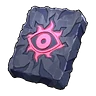
Плита Бэллануар Либеро⚖️ 1
Плита Бэллануар Либеро
ЭпическийПлита с изображением пала «Бэллануар Либеро». Возложите её на Алтарь для призыва, чтобы призвать чрезвычайно могущественного пала «Бэллануар Либеро» 45-го уровня.
🔨 Крафт
Где сделать
📍 Где взять
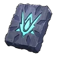
Плита Зенолорда⚖️ 1
Плита Зенолорда
ЭпическийПлита с изображением пала «Зенолорд».
🔨 Крафт
Где сделать
📍 Где взять
Из игры
Плита с изображением пала «Зенолорд». Возложите её на Алтарь для призыва для призыва могучего Зенолорд «65-го уровня».
 Плита Харталис⚖️ 1
Плита Харталис⚖️ 1
Плита Харталис
ЭпическийПлита с изображением пала «Харталис». Возложите её на Алтарь для призыва, чтобы призвать чрезвычайно могущественного пала «Харталис» 70-го уровня.
🔨 Крафт
Где сделать
📍 Где взять
 Реверсер ПаловРазное
Реверсер ПаловРазное
Реверсер Палов
ЭпическийУдивительное снадобье, способное изменить пол Пала. Используется на Операционный стол для Палов.
📍 Где взять
 Костюм Зои на ХэллоуинРазное
Костюм Зои на ХэллоуинРазное
Костюм Зои на Хэллоуин
ЛегендарныйКостюм на Хэллоуин для Зои. Даже ей должно понравиться.
🔨 Крафт
Где сделать
Из игры
Костюм на Хэллоуин для Зои. Даже ей должно понравиться. Отнесите Зои!
🧪Небесная печать [Мастер]⚖️ 1
Небесная печать [Мастер]
ЛегендарныйПечать, покрытая таинственными узорами. Возложите её на Алтарь для призыва, чтобы призвать существо чудовищной силы.
 Памятный лоскут ткани ЗоиРазное
Памятный лоскут ткани ЗоиРазное
Памятный лоскут ткани Зои
ЛегендарныйСтарая ткань с едва уловимым ароматом. Эта вещь хранит для Зои дорогие воспоминания.
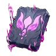
Плита Блазамут Рю (ультра)⚖️ 1
Плита Блазамут Рю (ультра)
ЛегендарныйПлита, излучающая силу пала «Блазамут Рю».
🔨 Крафт
Где сделать
Из игры
Плита, излучающая силу пала «Блазамут Рю». Возложите её на Алтарь для призыва, чтобы призвать Блазамут Рю «Ур. ??», чья сила внушает отчаяние.
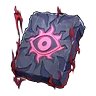
Плита Бэллануар Либеро (ультра)⚖️ 1
Плита Бэллануар Либеро (ультра)
ЛегендарныйПлита, излучающая силу пала «Бэллануар Либеро».
🔨 Крафт
Где сделать
Из игры
Плита, излучающая силу пала «Бэллануар Либеро». Возложите её на Алтарь для призыва, чтобы призвать Бэллануар Либеро «Ур. ??», чья сила внушает отчаяние.
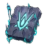
Плита Зенолорда (ультра)⚖️ 1
Плита Зенолорда (ультра)
ЛегендарныйПлита, излучающая силу пала «Зенолорд».
🔨 Крафт
Где сделать
Из игры
Плита, излучающая силу пала «Зенолорд». Возложите её на Алтарь для призыва, чтобы призвать Зенолорд «Ур. ??» с небывалой мощью.
 Плита Харталис (ультра)⚖️ 1
Плита Харталис (ультра)⚖️ 1
Плита Харталис (ультра)
ЛегендарныйПлита, излучающая силу пала «Харталис». Возложите её на Алтарь для призыва, чтобы призвать невероятно могущественного пала «Харталис» «Ур. ??».
🔨 Крафт
Где сделать
 Тайное снадобье выносливости⚖️ 1
Тайное снадобье выносливости⚖️ 1
Тайное снадобье выносливости
ЭпическийЦенное снадобье, навсегда незначительно увеличивающее характеристику «Выносливость». Не действует на Палов.
🔨 Крафт
Где сделать
📍 Где взять
Тайное снадобье гиганта⚖️ 1
Тайное снадобье гиганта
ЭпическийЦенное снадобье, навсегда незначительно увеличивающее характеристику «Вес». Не действует на Палов.
🔨 Крафт
Где сделать
📍 Где взять
Тайное снадобье жизненной силы⚖️ 1
Тайное снадобье жизненной силы
ЭпическийЦенное снадобье, навсегда незначительно увеличивающее характеристику «Здоровье». Не действует на Палов.
🔨 Крафт
Где сделать
📍 Где взять
 Тайное снадобье труда⚖️ 1
Тайное снадобье труда⚖️ 1
Тайное снадобье труда
ЭпическийЦенное снадобье, навсегда незначительно увеличивающее характеристику «Скорость работы». Не действует на Палов.
🔨 Крафт
Где сделать
📍 Где взять
Тайное снадобье яростной атаки⚖️ 1
Тайное снадобье яростной атаки
ЭпическийЦенное снадобье, навсегда незначительно увеличивающее характеристику «Атака». Не действует на Палов.
🔨 Крафт
Где сделать
📍 Где взять
 Чудесное снадобье выносливости⚖️ 1
Чудесное снадобье выносливости⚖️ 1
Чудесное снадобье выносливости
ЛегендарныйЦенное снадобье, навсегда увеличивающее характеристику «Выносливость». Не действует на Палов.
🔨 Крафт
Где сделать
📍 Где взять
Чудесное снадобье гиганта⚖️ 1
Чудесное снадобье гиганта
ЛегендарныйЦенное снадобье, навсегда увеличивающее характеристику «Вес». Не действует на Палов.
🔨 Крафт
Где сделать
📍 Где взять
 Чудесное снадобье жизненной силы⚖️ 1
Чудесное снадобье жизненной силы⚖️ 1
Чудесное снадобье жизненной силы
ЛегендарныйЦенное снадобье, навсегда увеличивающее характеристику «Здоровье». Не действует на Палов.
🔨 Крафт
Где сделать
📍 Где взять
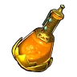
Чудесное снадобье труда⚖️ 1
Чудесное снадобье труда
ЛегендарныйЦенное снадобье, навсегда увеличивающее характеристику «Скорость работы». Не действует на Палов.
🔨 Крафт
Где сделать
📍 Где взять
 Чудесное снадобье яростной атаки⚖️ 1
Чудесное снадобье яростной атаки⚖️ 1
Чудесное снадобье яростной атаки
ЛегендарныйЦенное снадобье, навсегда увеличивающее характеристику «Атака». Не действует на Палов.
📍 Где взять
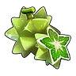
Ранговый фрукт ☆1⚖️ 1
Ранговый фрукт ☆1
ЭпическийРедкий волшебный фрукт. Позволяет повысить ранг Пала с ☆0 до ☆1.
📍 Где взять
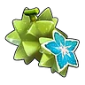
Ранговый фрукт ☆2⚖️ 1
Ранговый фрукт ☆2
ЭпическийРедкий волшебный фрукт. Позволяет повысить ранг Пала с ☆1 до ☆2.
📍 Где взять
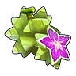
Ранговый фрукт ☆3⚖️ 1
Ранговый фрукт ☆3
ЭпическийРедкий волшебный фрукт. Позволяет повысить ранг Пала с ☆2 до ☆3.
📍 Где взять
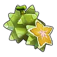
Ранговый фрукт ☆4⚖️ 1
Ранговый фрукт ☆4
ЭпическийРедкий волшебный фрукт. Позволяет повысить ранг Пала с ☆3 до ☆4.
📍 Где взять
 Плод жизни⚖️ 1
Плод жизни⚖️ 1
Плод жизни
ЛегендарныйЦенный и невероятно редкий плод. Немного повышает здоровье Пала.
🔨 Крафт
Где сделать
📍 Где взять
 Плод силы⚖️ 1
Плод силы⚖️ 1
Плод силы
ЛегендарныйЦенный и невероятно редкий плод. Немного повышает Атаку Пала.
🔨 Крафт
Где сделать
📍 Где взять
 Плод стойкости⚖️ 1
Плод стойкости⚖️ 1
Плод стойкости
ЛегендарныйЦенный и невероятно редкий плод. Немного повышает Защиту Пала.
🔨 Крафт
Где сделать
📍 Где взять
 Спелый ранговый фрукт⚖️ 1
Спелый ранговый фрукт⚖️ 1
Спелый ранговый фрукт
ЛегендарныйРедкий волшебный фрукт. Позволяет повысить ранг Пала на 1 ступень.